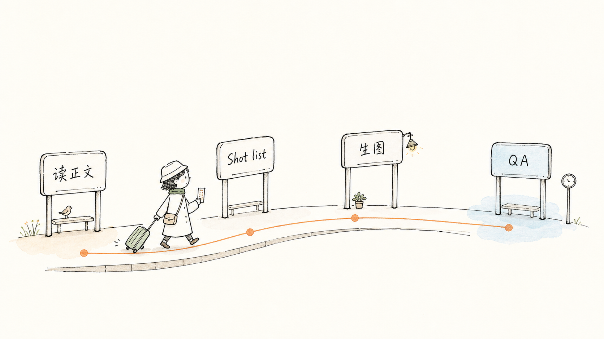
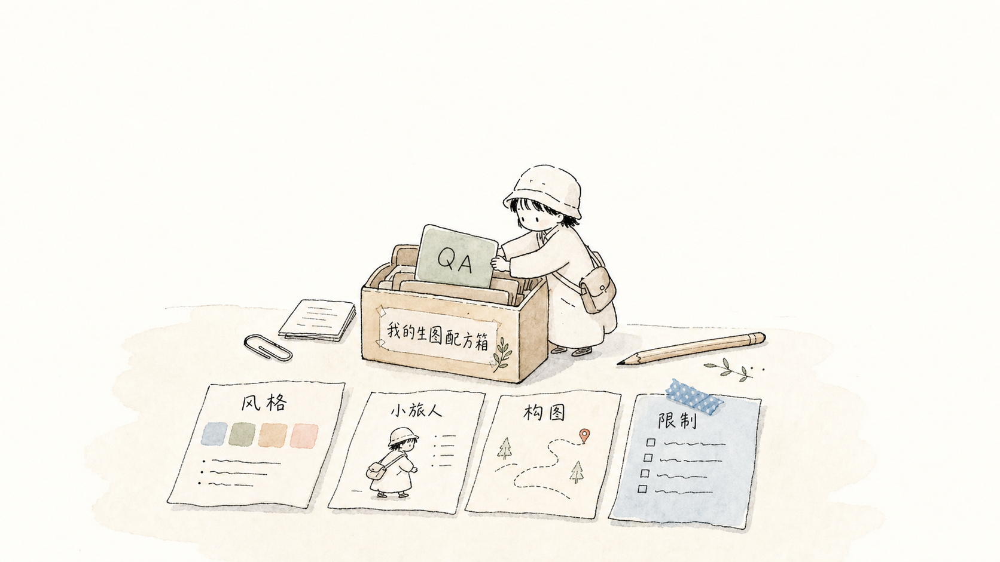
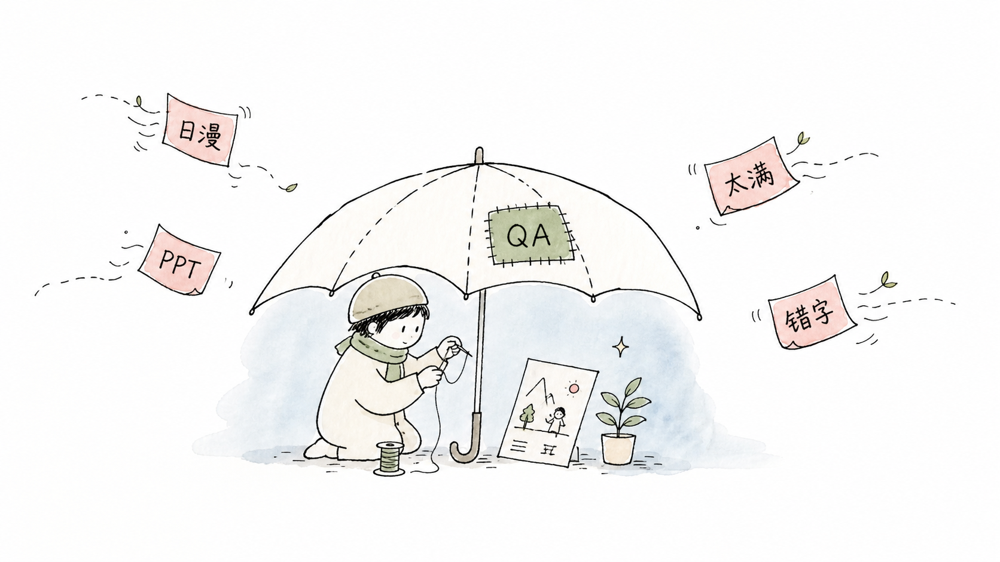

Style DNA
Clear rules for background, line weight, color, whitespace, labels, and what to avoid.
A structured Codex skill that packages style DNA, a recurring traveler character, composition patterns, prompt templates, and QA rules.

Most AI image prompts are fragile. This project turns a fragile prompt into a maintainable illustration system.
Clear rules for background, line weight, color, whitespace, labels, and what to avoid.
The quiet traveler, 小旅人, performs the core action instead of decorating the scene.
A checklist catches anime drift, PPT-like diagrams, clutter, unreadable text, and overdone colors.
The images are generated as project illustrations and README assets.



cp -R "skills/japanese-handdrawn-illustrations" "$HOME/.codex/skills/"